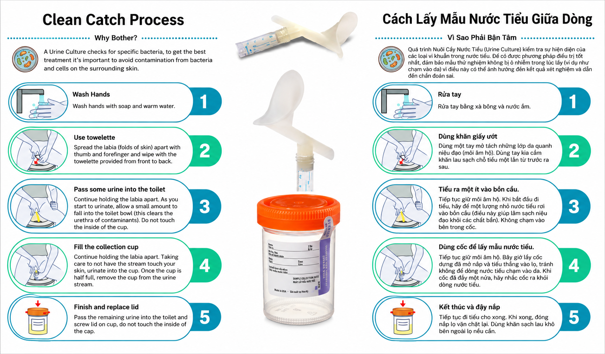

How do I pee in this cup?
Understanding the usability of clean-catch directions and procedure alongside UW's School of Medicine for better urinary tract infection outcomes — with attention to contamination risk and uncertainty.

Inappropriate antibiotic prescribing for UTIs is a primary driver of antimicrobial resistance. Reducing it depends on an uncontaminated urine sample — yet users are largely left to figure collection out on their own.
Identify where and why users struggle to prepare for and collect an at-home clean-catch sample, with particular attention to breakdowns that increase contamination risk and uncertainty.
A formative, remote usability test in participants' own bathrooms — think-aloud, interviews, a full scenario simulation, and probing of realistic error scenarios.
Why the "clean" in clean-catch matters
Culture-driven diagnosis is the gold standard of care for UTIs. But when samples are contaminated or patients can't access a facility, providers may default to empiric treatment — feeding the very resistance the culture is meant to prevent.
A group of urologists from UW Medicine will be piloting a home-testing program aimed at improving access to urine cultures and at trialing alternative urine-collection devices. To help inform the at-home testing protocol, our usability test focused on the clean-catch instructions — and specifically where users felt least confident in their ability to produce a "clean" sample.
Inappropriate prescribing for UTIs is among the primary drivers of antimicrobial resistance, one of the most pressing public-health threats of the 21st century. A critical factor in reducing unnecessary prescribing is obtaining an uncontaminated sample — yet whether at home or in a clinic, users are largely left to figure it out on their own.
- How do users' interpretations of at-home collection instructions shape their actions during preparation and collection?
- Where do usability and behavioral breakdowns occur that increase contamination risk?
Every contaminated sample is a decision point where a provider may treat on symptoms alone — and every empiric prescription is a small push toward resistance.
Testing in the place it actually happens
We ran remote, 60-minute sessions in participants' own bathrooms to maximize naturalistic conditions — no biological sample was collected, and the camera stayed off during the simulation for privacy while the moderator waited on call.
- Female anatomy, age 18+
- Greater Seattle area
- Prior UTI experience
- Comfortable discussing UTI topics
- Age range 18–48
- 2 with 1 prior UTI · 3 with 2–3 prior UTIs
- 4 English-speaking, 1 Vietnamese-speaking
- Recruited from personal network
- 3 antiseptic towelettes
- 1 collection cup
- 1 instruction sheet (English & Vietnamese)
- Remote via Zoom — 60-minute sessions
- Participants' home bathroom, naturalistic conditions
- Camera off during simulation; moderator on call
- One moderator, 1–3 note-takers (off camera)
Think-aloud protocol
Participants verbalized their thoughts during all tasks, giving direct insight into interpretation and confusion in real time.
Semi-structured interviews
Open-ended questions before and after the simulation surfaced mental models, expectations, and perceived challenges.
Scenario-based task simulation
Participants used the provided kit to simulate the full collection process at home — no biological sample collected.
Error scenario probing
Four realistic error scenarios assessed how well participants recognized mistakes and what recovery strategies they reached for.
Where confidence and correctness diverge
Across five sessions, three patterns emerged — and in each, participants' felt confidence rarely matched the moments that most increase contamination risk.
Even after reviewing the instructions, participants did not have a clear understanding of what contamination is or how this test differed from any other urine collection.
Users may not understand the purpose of "midstream" collection, which is meant to void contamination from the urethra.
"Not that I could not tell you… to my knowledge, it's all the same."
— P1"I guess I am uneducated as to why something like the bacteria from surrounding skin would be an issue for a urine collection like this."
— P4Responses varied widely — from "panic" to "readjust and keep going" — when participants were asked what they would do in a potentially contaminating scenario.
"Instructions didn't say that that was a problem… they just said don't touch the inside of the cup. So I don't think I would have had the thought that that would have been a problem."
— P4"The urge as a female [is] to want to hold the cup up to directly touch your skin so that you're not accidentally urinating on yourself."
— P1The testing process is often not supported by clear, consistent, or accessible communication. Participants reported receiving only verbal instructions in past experiences — or none at all.
Reported only receiving verbal instructions in past experiences. Some providers skip testing and prescribe medication based on symptoms alone.
Language barriers and unfamiliar medical terms (e.g. "labia") limit accessibility. Step 3 — holding the labia — was identified by 3/5 as the most difficult step.
Physical challenges compounded the confusion: aiming, cup size, splashing, overflow, and multi-tasking were all cited as friction points.
"I was just given an antibiotic and told to come back in a few days."
— P4"Is this far enough, did I clean enough, is this all good? Would be where the confusion and adjustment would come in."
— P1Designing for a confident, clean catch
The friction clusters into four recurring failure points. Each points to a concrete change in the instructions, the kit, or both.
"I guess I am uneducated as to why something like the bacteria from surrounding skin would be an issue…"
— P4
"I'm not sure what part to collect: the initial part, the end, or the middle."
— P2
"There's no instruction here on what happens if something goes wrong."
— P4
"Peeing in the cup is hard. It's hard to aim because of the size and it's easy to spill."
— P5
- Consider material ergonomics across body sizes and physical abilities.
- Improve cup usability for aiming and handling.
- Use visual language that specifies sample volume and expectations.
- Make cup packaging easy to open.
- Consider collection aids that remove the need to hold the cup.
- Include extra containers for mistakes, gloves for hygiene, and additional wipes (3× preferred).
"If there were something I could just sit on and pee normally without having to hold a cup, that would be the most useful." — P5
"Change the cup design — as a female it's hard to know where to aim to get the sample into the cup."
— P3"Add an FAQ or instructions for what to do if something goes wrong during the collection."
— P2What we'd carry into the next study
Recruitment strategy
Recruiting from people you know can be a good option for usability tests on sensitive topics — participant comfort is essential to obtaining candid responses.
Screening design
Keep the screening survey simple and clear; collect only meaningful information and avoid survey fatigue before the study even begins.
Moderation tone
Remember you're talking to people. Keep the moderation prompt friendly, warm, and short — clinical detachment can inhibit authentic sharing.
The most confident participant and the most contaminated sample can be the same person — so the design has to close the gap between feeling done and being clean.
- 01 WHO, 2023.
- 02 Flores-Mireles et al., Nature Reviews Microbiology, 2015.
- 03 Sabih, A., & Leslie, S. W. (2023). Complicated urinary tract infections. In StatPearls. StatPearls Publishing.
- 04 Al-Badr, A., & Al-Shaikh, G. (2013). Recurrent Urinary Tract Infections Management in Women: A review. Sultan Qaboos University Medical Journal, 13(3), 359–367.
- 05 Kim, A., et al. (2021). What is the Cause of Recurrent Urinary Tract Infection? International Neurourology Journal, 25(3), 192–201.
- 06 Lifshitz, E., & Kramer, L. (2000). Outpatient urine culture: does collection technique matter? Archives of Internal Medicine, 160(16), 2537–2540.
- 07 ScienceDirect, S0020748922001547.
HCDE · UW MEDICINE · 2024
ANH HUA · CHRISTOPHER JONES · JULIA BROOKS · ZHUOLIN LI